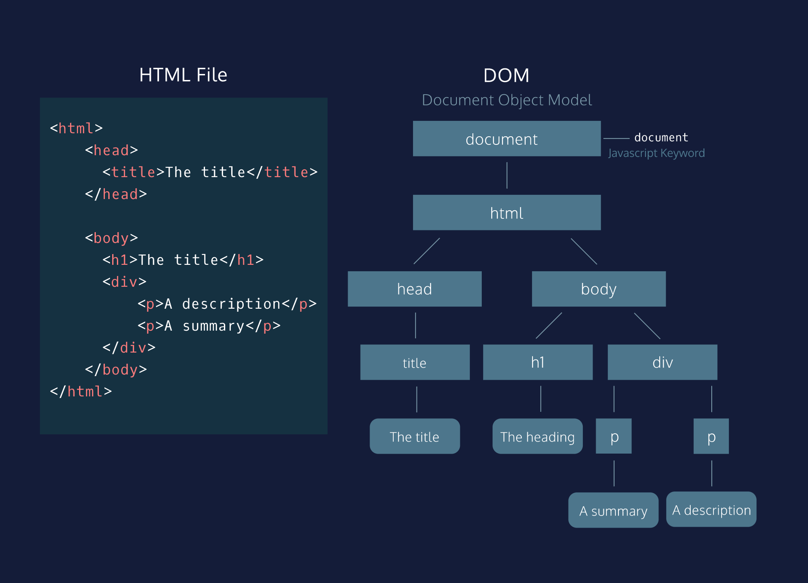

In this unit, you will learn how to use JavaScript to build interactive websites.
Building Interactive Websites
Goals of this Unit
The goal of this unit is to learn how JavaScript is used to add interactive experiences to a website.
After this unit, you will be able to:
Add JavaScript to a website for interactivity
Understand what the DOM is
Understand what DOM Events are
Create forms using HTML and validate them using JavaScript
You will put all of this knowledge into practice with an upcoming Challenge Project. You can complete the Challenge Project either in parallel with or after taking the prerequisite content—it’s up to you!
HTML defines the structure of a web page by using page elements as the building blocks. However, HTML by itself can not produce web page interactivity, that’s where JavaScript comes in.
The Script Tag
The <'script'> element allows you to add JavaScript code inside an HTML file. Below, the <"script"> element embeds valid JavaScript code:
Frankly, without the <'script'> tag, websites would be unclickable and a bit boring.
The <'script'> element, like most elements in HTML, has an opening and closing angle bracket. The closing tag marks the end of the content inside of the <'script'> element. Just like the <'style'> tag used to embed CSS code, you use the <'script'> tag to embed valid JavaScript code.
The src attribute
Since you know how to use a <'script'> element with embedded code, let’s talk about linking code. Linking code is preferable because of a programming concept called Separation of Concerns (SoC). Instead of having messy code that is all in the same file, web developers separate their code into different files, making each “concern” easier to understand and more convenient when changes must be made.
For this exercise, instead of writing JavaScript in our HTML file, we are going to write it in its own file, and then reference this code with a file path name. We will do this using an attribute that may jog your memory: the src attribute!
If this seems familiar, that’s because you may have been linking to external files with the <'img'> and <'link'> elements. The attribute is exactly the same, but now its value specifies the location of your script file. If the file is in the same project folder, the src value will be a relative path name. Below is an example of a providing a relative path for a JavaScript file.
How are scripts loaded?
A quick recap: the <'script'> element allows HTML files to load and execute JavaScript. The JavaScript can either go embedded inside of the <'script'> tag or the script tag can reference an external file. Before we dive deeper, let's take a moment to talk about how browsers parse HTML files into web pages. This informs where to include a <'script'> element inside your HTML file.
Browsers come equipped with HTML parsers that help browsers render the elements accordingly. Elements, including the <'script'> element, are by default, parsed in the order they appear in the HTML file. When the HTML parser encounters a <'script'> element, it loads the script then executes its contents before parsing the rest of the HTML. The two main points to note here are that:
The HTML parser does NOT process the next element in the HTML file until it loads and executes the <'script'> element, thus leading to a delay in load time and resulting in a poor user experience.
Additionally, scripts are loaded sequentially, so if one script depends on another script, they should be placed in that very order inside the HTML file.
Defer attribute
When the HTML parser comes across a <'script'> element, it stops to load its content. Once loaded, the JavaScript code is executed and the HTML parser proceeds to parse the next element in the file. This can result in a slow load time for your website. HTML4 introduced the defer and async attributes of the <'script'> element to address the user wait-time in the website based on different scenarios.
The defer attribute specifies scripts should be executed after the HTML file is completely parsed. When the HTML parser encounters a <'script'> element with the defer attribute, it loads the script but defers the actual execution of the JavaScript until after it finishes parsing the rest of the elements in the HTML file.
When is defer useful? When a script contains functionality that requires interaction with the DOM, the defer attribute is the way to go. This way, it ensures that the entire HTML file has been parsed before the script is executed.
Async attribute
The async attribute loads and executes the script asynchronously with the rest of the webpage. This means that, similar to the defer attribute, the HTML parser will continue parsing the rest of the HTML as the script is downloaded in the background. However, with the async attribute, the script will not wait until the entire page is parsed: it will execute immediately after it has been downloaded. Here is an example of the async tag:
Similar function like defer
When is it useful? async is useful for scripts that are independent of other scripts in order to function accordingly. Thus, if it does not matter exactly at which point the script file is executed, asynchronous loading is the most suitable option as it optimizes web page load time.
Top Points to Review
HTML creates the skeleton of a webpage, but JavaScript introduces interactivity
The <'script'> element has an opening and closing tag. You can embed JavaScript code inbetween the opening and closing <'script'> tags.
You link to external JavaScript files with the src attribute in the opening <'script'> tag.
By default, scripts are loaded and executed as soon as the HTML parser encounters them in the HTML file, the HTML parser waits to load the entire script before from proceeding to parse the rest of the page elements.
The defer attribute ensures that the entire HTML file has been parsed before the script is executed.
The async attribute will allow the HTML parser to continue parsing as the script is being downloaded, but will execute immediately after it has been downloaded.
The old convention was to put scripts right before the tag to prevent the script from blocking the rest of the HTML content. Now, the convention is to put the script tag in the <'head'> element and to use the defer and async attributes.
What is the DOM?
The Document Object Model, abbreviated DOM, is a powerful tree-like structure that allows programmers to conceptualize hierarchy and access the elements on a web page.
The DOM is one of the better-named acronyms in the field of Web Development. In fact, a useful way to understand what DOM does is by breaking down the acronym but out of order:
The DOM is a logical tree-like Model that organizes a web page’s HTML Document as an Object.
The DOM is a language-agnostic structure implemented by browsers to allow for web scripting languages, like JavaScript, to access, modify, and update the structure of an HTML web page in an organized way.
The DOM as a Tree Structure
Tree-like modeling is used in many fields, including evolutionary science and data analytics. Perhaps you’re already familiar with the concept of family trees: these charts represent the familial relationships amongst the descendants of a given family name.

The DOM tree follows similar logic to that of a family tree. A family tree is made up of family members and their relationships to the family name. In computer science, we would call each family member a node.
We define a node as an intersecting point in a tree that contains data. In the DOM tree, the top-most node is called the root node, and it represents the HTML document. The descendants of the root node are the HTML tags in the document, starting with the <'html'> tag followed by the <'head>' and <'body'> tags and so on.
Parent Child Relationships in the DOM
Following the metaphor of a family tree, let’s define some key terminology in the DOM hierarchy:
A parent node is the closest connected node to another node in the direction towards the root.
A child node is the closest connected node to another node in the direction away from the root.
Knowing these terms will allow you to understand and discuss the DOM as a tree-like structure. In fact, you will also see this terminology used when referring to the nesting structure of HTML code. Programmers refer to elements nested inside other elements as the children elements and parent elements respectively.
Nodes and Elements in the DOM
As mentioned, a node is the equivalent of each family member in a family tree. A node is an intersecting point in a tree that also contains data.
There are nine different types of node objects in the DOM tree. In our diagram, the node objects with the sharp-edge rectangles are of the type Element, while the rounded edge rectangles are of type Text, because they represent the text inside the HTML paragraph elements.
When trying to modify a web page, the script will mostly interact with the DOM nodes of type element. Elements are the building units of HTML web pages, they contain everything between an opening tag and a closing tag. If the tag is a self-closing tag, then that is the element itself.
Attributes of Element Node
DOM element nodes model elements in an HTML document.
Much like an element in an HTML page, the DOM allows us to access a node’s attributes, such as its class, id, and inline style.
The document keyword
The Document Object Model, abbreviated DOM, is a powerful tree-like structure that organizes the elements on a web page and allows scripting languages to access them. This lesson will focus on some of the most useful methods and properties of the DOM Interface in JavaScript. This interface is implemented by every modern browser.
First things first! The document object in JavaScript is the door to the DOM structure. The document allows you to access the root node of the DOM tree. Before you can access a specific element in the page, first you must access the document structure itself. The document allows scripts to access children of the DOM as properties.
Tweak an Element
When using the DOM in your script to access an HTML element, you also have access to all of that element’s properties.
This includes the ability to modify the contents of the element as well as its attributes and properties— that can range from modifying the text inside a p element to assigning a new background color to a div.
You can access and set the contents of an element with the .innerHTML property.
For example, the following code reassigns the inner HTML of the body element to the text ‘The cat loves the dog’:
The .innerHTML property can also add any valid HTML, including properly formatted elements. The following example assigns an h2 element as a child inside the <'body'> element:
Select and Modify Elements
In the previous exercise, we accessed the webpage elements with the document keyword!
What if we wanted to select a specific element? The DOM interface allows us to access a specific element with CSS selectors. CSS selectors define the elements to which a set of CSS rules apply, but we can also use these same selectors to access DOM elements with our script! Selectors can include the name of the tag, a class, or an ID.
The .querySelector() method allows us to specify a CSS selector and then returns the first element that matches that selector. The following code would return the first paragraph in the document.
You can also use other CSS selectors such as an element’s . class or its # ID.
Another option, if you want to access elements directly by their id, you can use the aptly named .getElementByID() function:
The example chains so that it selects the element with an ID of ‘bio’ and set its .innerHTML to the text ‘The description’.
Style an element
Another way to modify an element is by changing its CSS style. The .style property of a DOM element provides access to the inline style of that HTML tag.
The syntax follows an element.style.property format, with the property representing a CSS property.
For example, the following code selects the first element with a class of blue and assigns blue as the background-color:
Unlike CSS, the DOM style property does not implement a hyphen such as background-color, but rather camel case notation backgroundColor. Check out this MDN reference page to see a list of how CSS properties are converted into JavaScript.
The following chaining syntax would also work:
Create and Insert Elements
Just as the DOM allows scripts to modify existing elements, it also allows for the creation of new ones.
The .createElement(tagName) method creates a new element based on the specified tag name passed into it as an argument. However, it does not append it to the document. It creates an empty element with no inner HTML.
In order to create an element and add it to the web page, you must assign it to be the child of an element that already exists on the DOM. We call this process appending. The .appendChild() method will add a child element as the last child node.
The following code creates a new paragraph element, gives it an id, adds text to the new element’s .innerHTML, and appends it to the body of the document:
Unlike the .innerHTML property, the .appendChild() method does not replace the content inside of the parent, in this case body. Rather, it appends the element as the last child of that parent.
Remove an Element
In addition to modifying or creating an element from scratch, the DOM also allows for the removal of an element. The .removeChild() method removes a specified child from a parent.
Because the .querySelector() method returns the first paragraph, the following code would remove the first paragraph in the document:
It’s possible to also specify a different parent with the .querySelector() method, as long as you remove an element nested within that parent element.
If you want to hide an element because it does not need to be loaded initially, the .hidden property allows you to hide it by assigning it as true or false:
The code above did not remove the element from the DOM, but rather hid it. This is not the same as setting the CSS visibility property to hidden. For a list of the best use cases for this property, read a list in the MDN Documentation
Interactivity with onclick
You can add interactivity to DOM elements by assigning a function to run based on an event.
Events can include anything from a click to a user mousing over an element.
The .onclick property allows you to assign a function to run on a click event on an element:
Traversing the DOM
In the DOM hierarchy, parent and children relationships are defined in relation to the position of the root node. A parent node is the closest connected node to another node in the direction towards the root.
A child node is the closest connected node to another node in the direction away from the root.
These relationships follow the nesting structure present in HTML code. Elements nested within one HTML tag are children of that parent element.
Each DOM element node has a .parentNode and .children property. The property will return a list of the element’s children and return null if the element has no children.
The .firstChild property will grant access to the first child of that parent element.